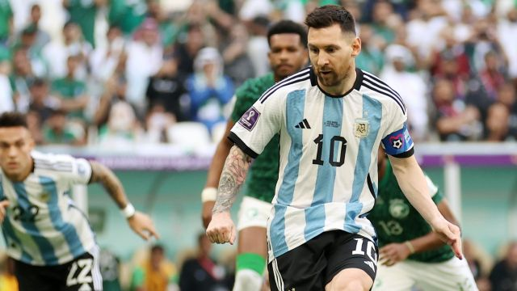
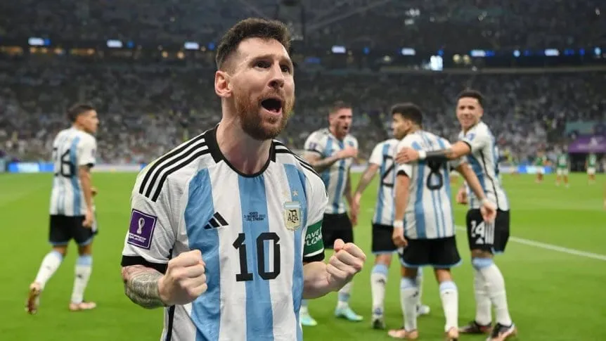
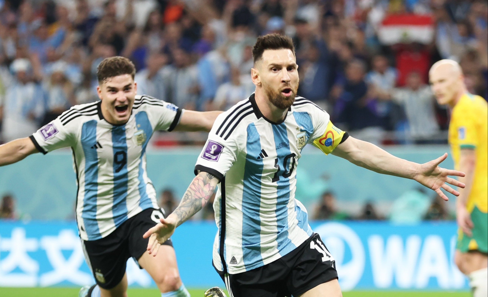
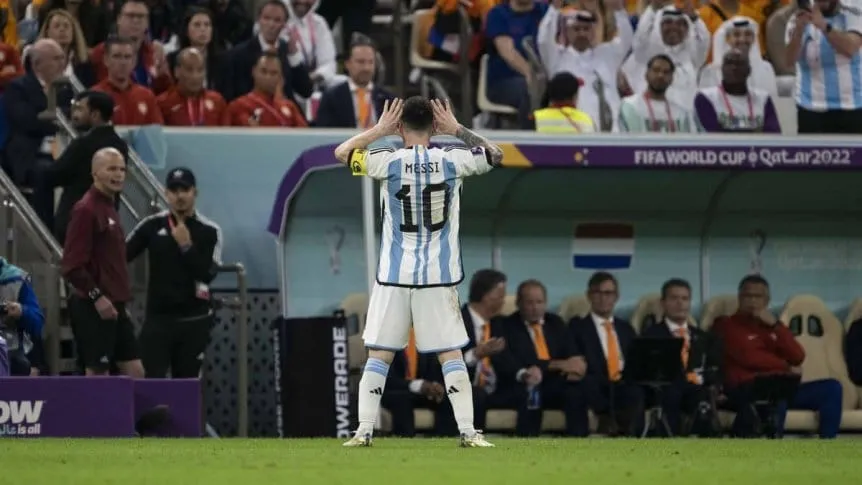
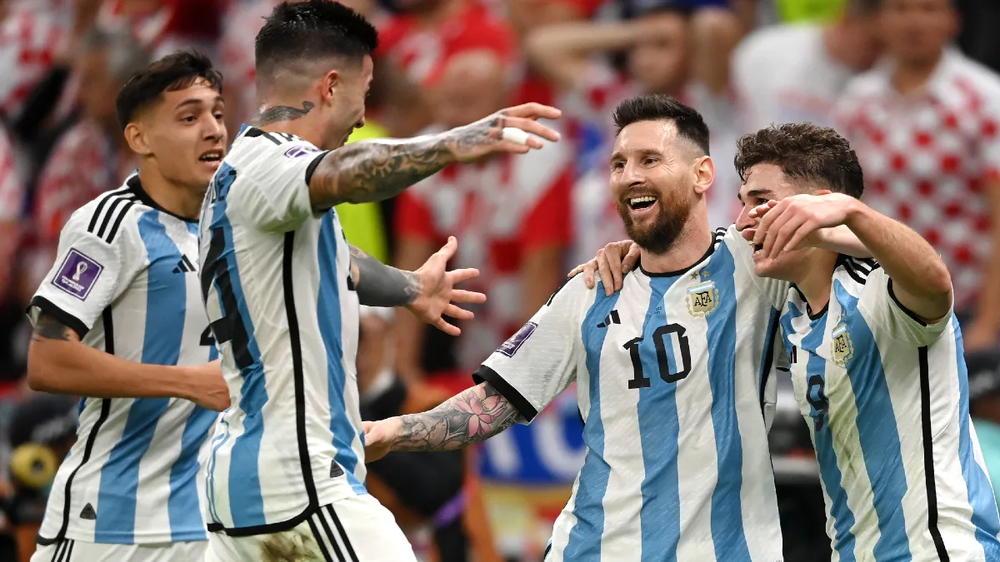

Despues de 4 intentos fallidos, Lionel Messi llegaba a disputar su 5ta "FIFA World Cup" con Argentina. El camino de Messi para cumplir el sueño que había estado persiguiendo toda su carrera tendría un comienzo complicado al perder el primer partido de la fase de grupos por 2-1 (1er gol de Messi en esta copa del mundo) contra Arabia Saudita en un partido que sorprendio al mundo.
A pesar del duro arranque y las fuertes criticas "Leo" prometio no dejar tirados a los hinchas argentinos y fue así como la selección Argentina consiguio su pase a la siguiente ronda luego de 2 victorias ante México y Polonia, ambas por 2-0. Messi abriría el marcador en el partido ante México dando el envíon anímico que necesitaba el equipo y luego brindo una asistencia a su compañero Enzo Fernández.
En 8vos de final, Argentina debía enfrentarse a Australia, y nuevamente Messi abriría el marcador para completar con un gran partido por su parte en el que Argentina se impuso por 2-1.
Llegaban los 4tos de final y el mundo se empezaba a preparar para uno de los mayores clasicos en la historia de la copa, Argentina debía enfrentarse a Paises Bajos. Los días previos al partido tanto jugadores como cuerpo tecnico del contrincante hablaron e intentaron desmerecer al plantel argentino buscando ser superiores en el juego mental. Estas provocaciones dieron lugar a un partido muy acalorado que sera recordado por muchos años. Argentina termino imponiendose en la tanda de penales luego de un empate 2-2 en los 120 minutos, donde Messi abre el marcador y asiste a Nahuel Molina. Las palabras del director tecnico neerlamdés serían las causantes de una imágen que recorrio el mundo y sorprendio a mas de uno.
En semifinal al plantel comandado por Lionel Scaloni le tocaba enfrentarse a Croacia, quien venía de eliminar a Brasil en la fase previa. El gol de Messi desde los 12 pasos termino abriendo el partido para la albiceleste quien se impuso 3-0 mostrando un gran nivel de juego y a un Messi intratable, el cual ademas del gol,asistió a Julían Alvarez en el 3er gol argentino dandole el paso a una nueva final de la copa del mundo así como lo hizo en el 2014.
18 de diciembre, el día tan esperado llegaba y había mucha espectativa por la gran final. Argentina vs Francia, Messi vs Mbappe, la experiencia contra la juventud.
Si bien todo el mundo esperaba un partido muy peleado, Argentina no dejo que los nervios influyan y salió a la cancha con una actitud apabullante para imponerse 2-0 con goles de Messi y Di María en los primeros 45 minutos. Sin embargo, a pesar de estar jugando un gran partido, 2 jugadas aisladas le darían el empate a Francia en 2 minutos y a falta de 10 del pitido final.
En el tiempo extra, Argentina nuevamente pasa al frente con otro gol de Messi convirtiendo asi un doblete en la final. Como si de una pelicula se tratase, Francia iba a empatar nuevamente el partido prolongando el sueño de Messi y de todo Argentina hasta la tanda de penales. Allí, luego de una gran ejecución tanto de Messi como de sus compañeros y una gran actuacion de Emiliano "el dibu" Martínez, Argentina vuelve a ser campeon del mundo y así Messi cumplía su máximo sueño como futbolista con una de las mejores actuaciones individuales en la copa ganando por segunda vez el Balon de Oro del torneo.